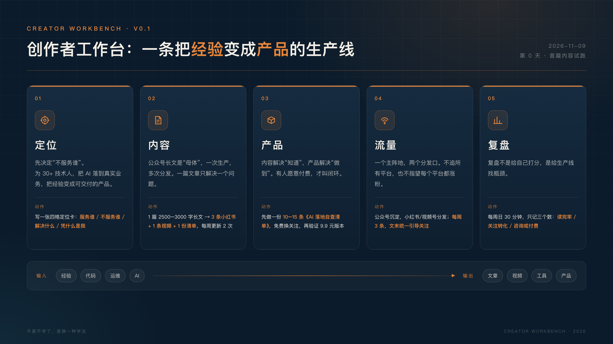
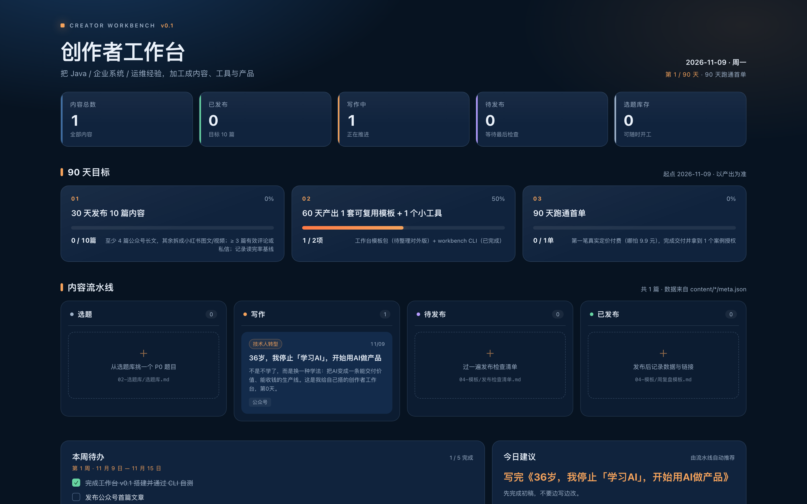

不是不学了。
而是换一种学法：把 AI 变成一条能交付价值、能收钱的生产线。
这是我给自己搭的「创作者工作台」，第 0 天。
有段时间，我常常在深夜关掉一个又一个 AI 教程页面，心里发虚。
浏览器里常年挂着几个半成品：没看完的教程、跑不通的 Demo、只写了两行的 README。
我今年 36 岁，做 Java 出身，企业级系统的研发和运维都干过。AI 火起来之后，我把下班后的很多时间花在它身上：Prompt、RAG、Agent、MCP，很多新模型出来，我都忍不住去试。
看起来很努力，对吧？
可如果现在有人问我：你做出过什么？
我拿不出一个离开公司也属于我、能给别人用、能收钱、能持续迭代的东西。
那一刻我才承认：我不是在学习 AI，我是在消费 AI。
我不是让你不学基础。该学的概念还得学，我停的是那种以学习为终点、用输入代替交付的“消费式学习”。
我们这代人太熟悉“学习”这件事了。
考试、考证、刷课、做笔记。只要输入足够多，就会有一种“我在进步”的安全感。
收藏夹里的文章越来越多，真正动手做出来的东西却越来越少。每次学完一个新框架，我都觉得自己又厉害了一点；可第二天回到工作里，一切照旧。
但创作者的世界不是这样运转的。
学生思维的终点是考试，创作者思维的终点是交付。
我用三个问题问过自己：
三个问题，我都没有好答案。
我越来越觉得：知道的差距在缩小，做到的差距在放大。
知识不再稀缺，能把知识变成结果的人，才稀缺。
我一度很焦虑：36 岁，程序员，还赶得上吗？
后来我想明白一件事：我过去很多年做的，不只是写代码。
企业级系统教会我的，是另一套东西：
举个典型的企业场景。
RAG 的 Demo，接一个向量库，十分钟就能跑起来。但放到企业里，问题立刻变成：权限怎么隔离？数据更新了怎么办？检索不到时怎么兜底？回答错了谁负责？
Agent 也一样。演示时能自动订机票很酷，但真实业务里，支付要不要二次确认？操作能不能回滚？每一步能不能追溯？
这些都不是模型问题，是系统问题。
而这些，恰好是我过去很多年一直在处理的问题。
这些能力，在 AI 时代不但没有过期，反而变得更稀缺。
因为模型负责“聪明”，工程师负责“可靠”。
AI 会压缩重复性编码的价值，但会奖励那些能把 AI 接进真实业务、并且对结果负责的人。
我不想再只把时间卖给一家公司。
我想把经验做成可以重复交付的产品。
想清楚这一点之后，我没有立刻辞职，也没有报新的课。
我先给自己搭了一台工作台。
因为我缺的不是热情，而是一条不依赖灵感的流程；否则写两篇，又会回去学新工具。
在我这里，工作台不是一堆软件，也不是一个漂亮的仪表盘。
它是一条生产线：左边输入你的经验，中间是 AI 和流程，右边输出内容、工具和产品，最后用数据把整条线调优。
我把做企业系统的那套办法，搬到了内容生产上：先做需求（定位），再设计生产线（内容），再做交付物（产品），再做渠道（流量），最后做监控和复盘（复盘）。
这条生产线，我把它拆成五层。
第一层：定位层。先决定“不服务谁”。
我希望服务 30+ 的技术人，帮他们把 AI 落到真实业务，把经验变成可交付的产品。
我不服务想一夜暴富的人、只收藏不行动的人、要包涨粉承诺的人。我不卖成功学，只公开自己正在验证的过程和工具。
我宁愿只服务 100 个真正需要的人，也不想去讨好 10 万个和我无关的人。
第二层：内容层。一个主题，四种形态。
公众号长文是“母体”，一篇写透，再拆成小红书图文、视频口播和一份可下载的清单。不是每个平台从零开始写，而是一次生产、多次分发。
一篇文章只解决一个问题，但要在四个地方被看见。
一篇 2500–3000 字的长文，至少拆成 3 条小红书图文、1 条 3 分钟视频和 1 份清单；先保证每周稳定更新 2 次。
第三层：产品层。内容解决“知道”，产品解决“做到”。
有人看完文章说“有道理”，这不值钱；有人愿意为模板、清单、小工具或陪跑服务付费，才叫闭环。内容负责建立信任，产品负责兑现价值。
我的第一个产品，会是一份 10–15 条的《AI 落地自查清单》：先免费换关注，再考虑 9.9 元的完整版。它必须能帮人解决一个具体问题。
第四层：流量层。一个主阵地，两个分发口。
主阵地是公众号，小红书和视频号只做分发；每周三条，文末统一引导关注或回复关键词。
我不追所有平台，也不指望每个平台都涨粉。流量不是目的，信任才是。
对一个新手来说，最忌讳的是今天做公众号、明天做抖音、后天做播客，最后哪个都没做起来。
第五层：复盘层。每周只看三个数。
读完率、关注转化、咨询或付费。每周日 30 分钟，记录三个数，连续四周看趋势。
数据不好，先改选题和开头，不改人设，也不怀疑人生。
复盘不是给自己打分，是给生产线找瓶颈。
这五层里，最重要的不是工具，而是顺序。
先定位，再内容，再产品。没有定位的内容很难持续；没有产品的内容，很难形成自己的资产。

回头看，我踩过三个坑。
第一个坑：把工具当能力。
我试过很多工具，也画过不少流程，但工具不会自动变成能力。能力是你用工具解决了一个真实问题，并且能重复解决。
第二个坑：把收藏当学习。
收藏一篇文章，只需要一秒钟；读懂并实践一篇文章，可能需要一整天。我收藏了太多“以后再看”，最后它们都变成了“再也没看”。
第三个坑：把发布当结果。
发布不是终点，反馈才是。一篇文章发出去，真正的学习才刚刚开始：读者在哪一段划走了？哪句话被转发了？有没有人来问问题？
想清楚这三个坑之后，我才开始搭工作台。
我没有等一个完美的工具。
这几天，我在 DSH（我日常用的 AI 工作台）里，把工作台的第一版搭了出来。
五层是设计图；第一版的几个零件，是把内容层和复盘层先落地。

我不想再对 AI 说“帮我写篇文章”。
我开始让它按一条生产线交付：这个选题写给谁、解决什么问题、用什么结构、配什么图、发到哪个平台、一周后数据不好该怎么改。
这篇文章，就是这台工作台的第一次试跑。
它不完美，但它是我从“学习者”变成“生产者”的第一步。
我不知道这套东西多久能赚到钱。可能三个月，可能一年。
但我想明白了一件事：哪怕钱还没来，能力、作品和信任已经在积累。这些东西不会归零。
我给自己定了一个 90 天实验。
第 1—30 天：稳定输出。
发布 10 篇内容，其中至少 4 篇公众号长文，每周投入 6–8 小时。不追求篇篇爆款，而是找到 3 个我能持续写、读者也愿意看的选题：至少 3 篇收到有效评论或私信，并记录读完率基线。
第 31—60 天：把动作变成模板。
把选题、写作、配图、发布、复盘这些重复动作固化下来，做出 1 个可复用的内容模板和 1 个小工具。验收标准是：模板被实际使用至少 10 次，工具至少有 3 个真实用户。
第 61—90 天：跑通第一个付费闭环。
哪怕只有 1 个客户、第一笔真实定价只有 9.9 元，也要验证：有人愿意为我交付的价值买单。交付完成后，拿到正反馈，并取得 1 个案例授权。
同时，我给自己定了三条规矩：
如果 90 天后失败了怎么办？
我会把失败的过程也写出来。
因为一个真实的失败实验，本身也是内容。
这个实验最大的价值，不是证明我能不能红，而是验证一套方法能不能被重复。
如果第 30 天连 3 篇都发不出来，就把频率砍到每周 1 篇；如果第 60 天还没有一个真实反馈，就重做选题，不重做定位。
如果你也是 30+ 的技术人，也有一身经验，也在某个深夜问过自己：
“除了上班，我还能靠什么？”
我想对你说：别急着辞职，也别急着报课。
先做一件小事：把你最近解决的一个问题，写成一篇能帮到别人的文章。
不用等准备好。准备是干出来的，不是学出来的。
我会在这个公众号持续记录这件事：一个 36 岁的 Java 工程师，如何用 AI 搭工作台、做内容、做产品，看看它能不能养活我。
如果这件事对你有启发，欢迎关注这个账号。我会持续记录这台工作台的搭建过程、踩过的坑和真实数据。
如果你也在做类似的事，欢迎在评论区告诉我：你的工作台长什么样？我们互相抄作业。
36 岁不是晚，是刚好知道自己在干什么的年纪。
我们下篇见。